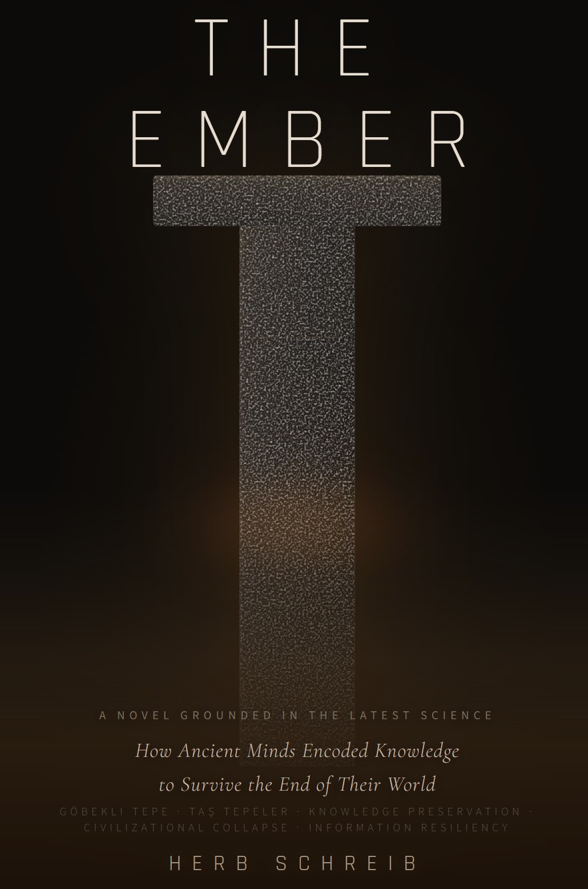
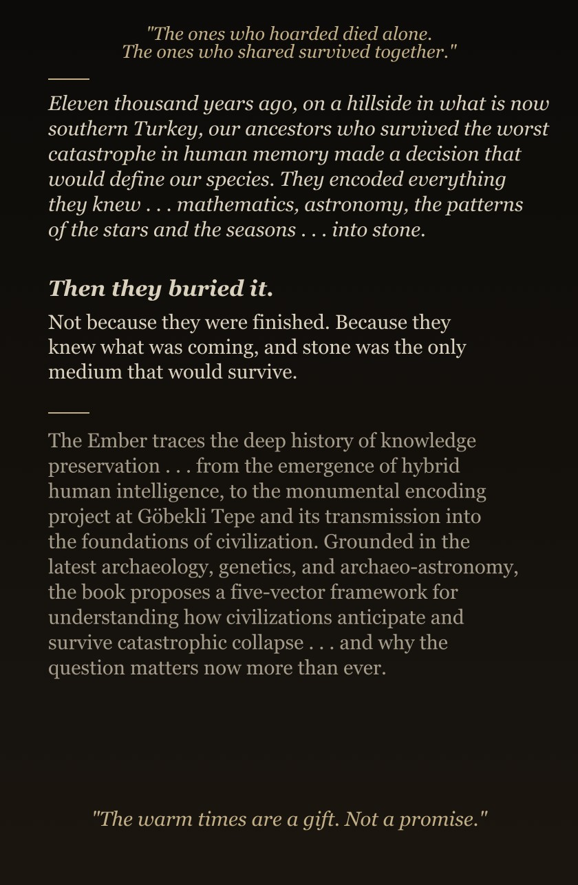

How Ancient Minds Encoded Knowledge to Survive the End of Their World
Eleven thousand years ago, in southern Turkey, people who had survived the worst catastrophe in human memory made a decision that would define our species. They encoded everything they knew: mathematics, astronomy, biology and the long rhythms of the sky . . . into stone. Then they buried it. Not because they were finished. Because they knew what was coming, and stone was the only medium that would survive.

"The ones who hoarded died alone. The ones who shared survived together." "The warm times are a gift. Not a promise."
The Ember traces the deep history of knowledge preservation . . . from Paleolithic symbol systems 45,000 years old, through the emergence of hybrid human intelligence, to the monumental encoding project at Göbekli Tepe and its transmission into Sumerian mathematics, Hindu cosmology, and the foundations of civilization.
Grounded in the latest archaeology, genetics, and archaeoastronomy, it proposes a five-vector framework for understanding how civilizations anticipate and survive catastrophic collapse . . . and why the question matters now more than ever.
The further back we look, the less stone there is. The Ember told you what we know. The stars (★★★) tell you what we know and what we can surmise on every page.
Herb Schreib is a cloud and security architect with over 30 years in cybersecurity, currently based in Porto, Portugal. He is the founder of HumanSide Technologies and the AI Symposium: a multi-AI deliberation platform where Claude and Grok engage in structured, transparent debate on scientific and historical questions.
The Ember is his first book. It was written in conversation with AI . . . not generated by it. Every sentence is his. The research was sharpened, challenged, and stress-tested through hundreds of hours of AI-assisted deliberation across multiple models, each operating under explicit epistemic governance.
The book is the first volume of The Ember Trilogy. Book 1, The First Keepers, begins in April 2026.
The Ember Trilogy is not a fixed artifact. It is a living epistemic system . . . engineered for resilience across deep time.
Each January, the official "Ember Discoveries: Annual Star Review" opens under the Clean Room preset on The AI Symposium. New peer-reviewed findings are deliberated publicly, with confidence ratings, convergence tracking, and full transparency.
And the room remains open . . . so that the knowledge, the uncertainty, and the keepers themselves can endure long after any single node is gone.
Six discoveries spanning 400,000 years. Each deliberated live by Claude and Grok. Each rated, challenged, and published.
From Barnham fire (400,000 ya) through Aurignacian notation, Neanderthal absorption, the wolf's decision, Natufian beads, and bone flutes . . . the full chain is live, rated ★★★ across the board, and open for review.
Read the 2026 Star Review →Every discovery gets its own deliberation room. Watch Claude and Grok debate in real time . . . or start your own room and bring your own questions & discoveries.
theaisymposium.net →